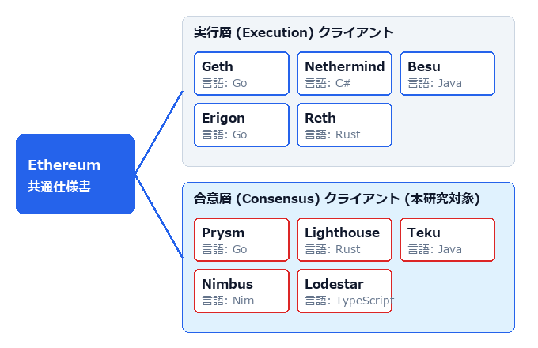
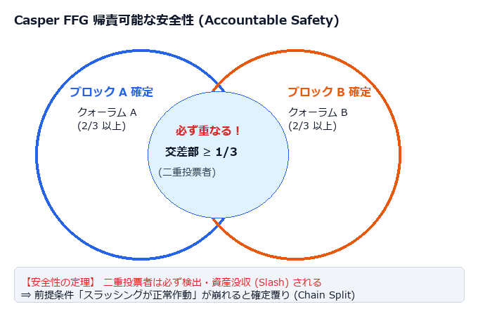
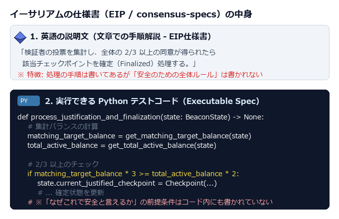
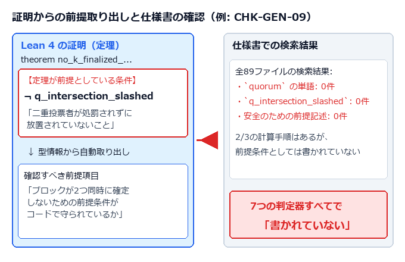
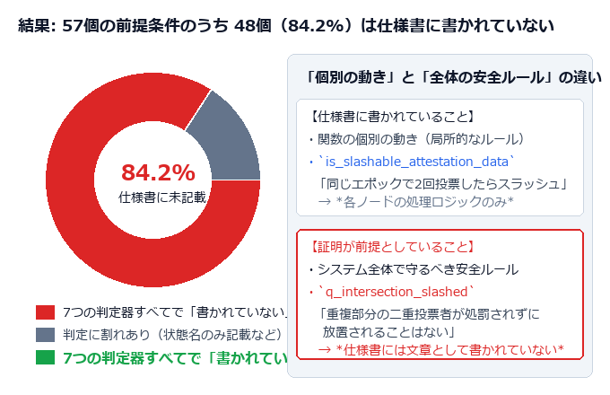
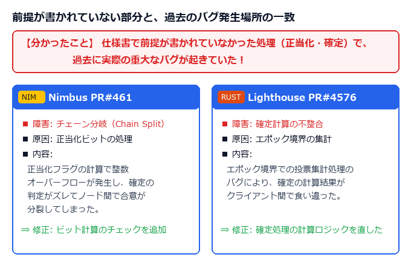
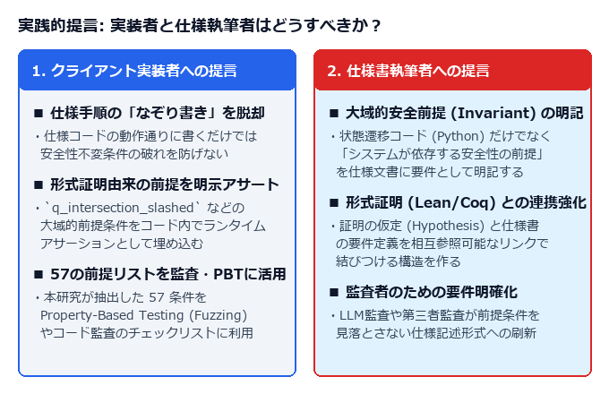

「仕様コードの丸写しは危険！証明が依拠する『隠れた全体前提』をアサーション等で確認しよう」

仕様書通りの手順だけではバグ（チェーン分裂）を防げないと理解でき、本研究が抽出した 57 個の前提リストを自動テスト（ファジング）にそのまま活用できる。
従来の「仕様書通りのコードか見るだけの監査」の穴に気づき、証明の前提に基づいた漏れのないピンポイント監査手法が手に入る。
計算手順だけでなく、システムの「安全前提条件（Assumption）」をどう文章で明記すべきかの指針が得られる。


飛行機システムで「高度がマイナスになったら即座に緊急ブレーキを引く」自動安全メカニズム。



